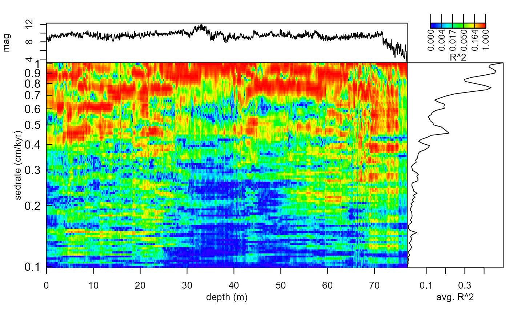
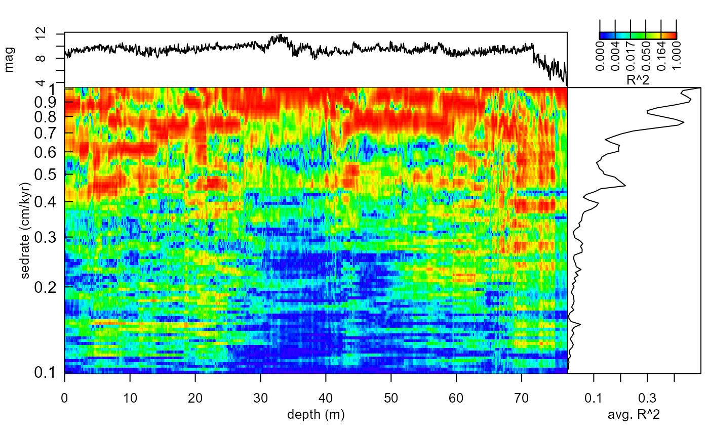

plot the windowed timeOpt sedimentation rate estimation
Source:R/plot_win_timeopt.R
plot_win_timeOpt.RdThe plot_win_timeOpt function plots a widowed
timeOpt sedimentation rate estimation
This function is based on the eTimeOptfunction
plot_win_timeOpt(
win_timeOpt_result = NULL,
proxy_name = NULL,
abline_h = NULL,
abline_v = NULL,
add_lines = NULL,
fig_lts = NULL,
xlab = "depth (m)",
ylab = "sedrate (cm/kyr)",
sel_parameter = 3,
n.levels = 100
)Arguments
- win_timeOpt_result
result of the
win_timeOptfunction that needs to be used as inputDefault=NULL- proxy_name
the name of the used proxy record
Default=NULL- abline_h
Add horizontal lines to the plot. Specify the lines as a vector e.g. 2,3,5,6
Default=NULL- abline_v
Add vertical lines to the plot. Specify the lines as a vector e.g. 2,3,5,6
Default=NULL- add_lines
Add lines to the wavelet plot input should be matrix with first axis being depth/time the columns after that should be period values
Default=NULL- fig_lts
Add a text box
Default=NULL- xlab
add a label to x-axis
Default="depth (m)"- ylab
add a label to y-axis
Default="sedrate (cm/kyr)"- sel_parameter
select one of the three returns of the
win_timeOptfunction element 1: r_2_envelope matrix element 2: r_2_power matrix element 3: r_2_opt matrixDefault=3- n.levels
Number of color levels
Default=100.
Value
The output is a plot of the average spectral power of a windowed timeOpt
References
Routines for astrochronologic testing, astronomical time scale construction, and time series analysis <doi:10.1016/j.earscirev.2018.11.015>
Examples
# \donttest{
#plot the windowed timeOpt of the magnetic susceptibility record
#of the Sullivan core of Pas et al., (2018).
mag_win_timeOpt <-win_timeOpt(
data = mag,
window_size = 15,
sedmin = 0.1,
sedmax = 1,
numsed = 100,
limit = FALSE,
fit = 2,
fitModPwr = TRUE,
flow = NULL,
fhigh = NULL,
roll = 10 ^ 6,
targetE = c(405.7, 130.7, 123.8, 98.9, 94.9),
targetP = c(20.9, 19.9, 17.1, 17.2),
detrend = TRUE,
normalize =TRUE,
linLog = 1,
run_multicore = FALSE,
verbose=FALSE)
plot_win_timeOpt(win_timeOpt_result = mag_win_timeOpt,
proxy_name= "mag",
abline_h=NULL,
abline_v = NULL,
add_lines=NULL,
fig_lts = NULL,
xlab="depth (m)",
ylab= "sedrate (cm/kyr)",
sel_parameter=3,
n.levels=100)
 
# }

# }